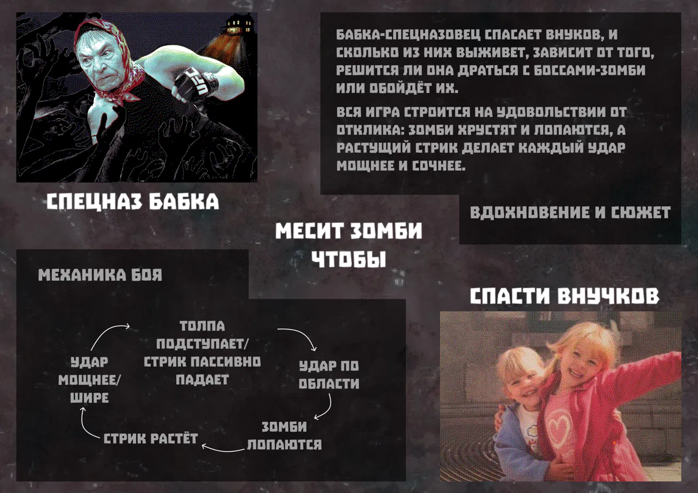

← All projects

In development
Vnuchki
About the project
An isometric action horde survival game, a solo project — game design and development in Godot. An ex-commando grandma fights her way through hordes of zombies to the house where her grandkids (vnuchki in Russian) are waiting. The game is about the joy of feedback: the player lands every hit themselves, and the zombies crunch, pop and burst into splatter in response.
Mechanics
- Area attack. Grandma swings her cane in an arc and hits every zombie in the zone. Regular zombies pop in one hit, with hitstop and screen shake.
- Kill streak. Every kill builds up the streak, and at certain thresholds the attack gets stronger: the arc widens, then a shockwave appears that knocks the crowd back, and after that zombies start exploding in a chain reaction. If you go 2 seconds without a kill, the streak fades, and a bite resets it instantly.
- Risk and reward. Letting the crowd get closer pays off, since more zombies die per hit, but it's dangerous: the horde can overwhelm you with numbers.
- Zombie bosses. Upgraded zombies take many hits and telegraph their attacks. Fighting them is about reading the wind-up and hitting during the vulnerability window, while the accumulated streak multiplies damage.
- Choices and endings. A boss can be avoided, but then it reaches the house first and takes a grandkid. How many bosses the player defeated and whether they made it home alive decide the outcome: a good, questionable or bad ending.
Style
Isometric view and gross-out cartoon style: grotesque zombies, slime and splatter.
What I did
Solo project: I handle all of the game design and development — designing the combat system and streak progression, balancing risk and reward, and implementing it in Godot.